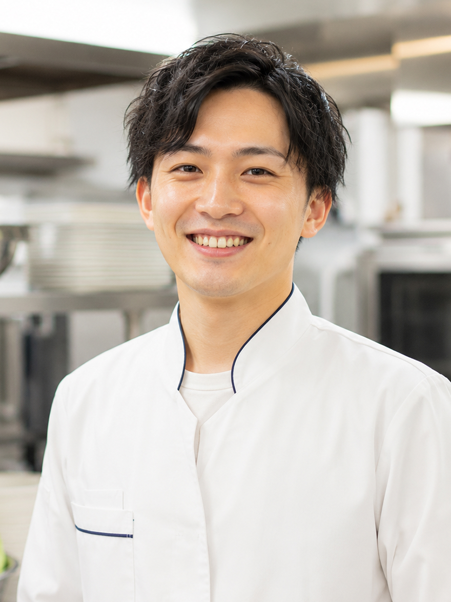
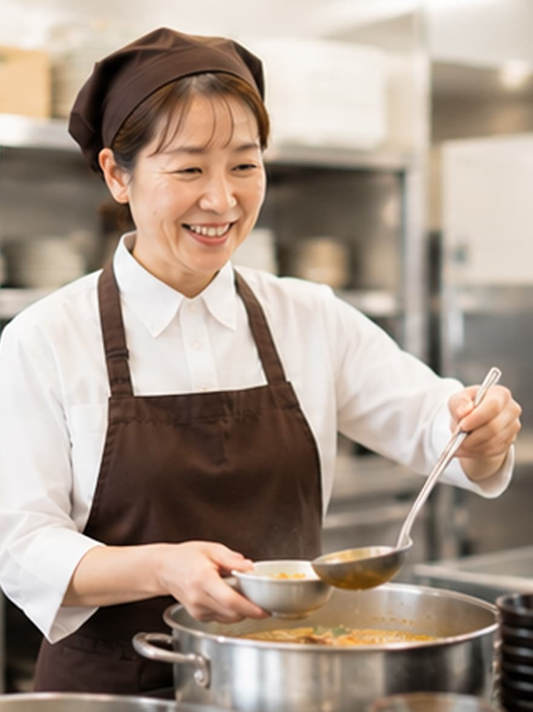

人を知る
社員インタビュー
調理師 / 入社3年目
「未経験から始めた給食調理の仕事」
前職は全く違う業界で働いていましたが、「食を通じて人を笑顔にしたい」という想いで 未経験ながら調理師としてキャリアをスタートしました。 入社当初は不安もありましたが、先輩スタッフの丁寧な指導のおかげで、 今では100食以上の調理を任されるまでに成長できました。
利用者の方から「今日のメニュー、美味しかったよ」と声をかけていただけることが、 何よりのやりがいです。
1日のスケジュール
| 06:00 | 出勤・朝礼 |
|---|---|
| 06:30 | 朝食の調理・配膳 |
| 09:00 | 昼食の下準備 |
| 10:30 | 昼食の調理 |
| 12:00 | 配膳・休憩 |
| 13:30 | 片付け・清掃 |
| 14:30 | 翌日の準備・確認 |
| 15:00 | 退勤 |

栄養士 / 入社5年目
「栄養管理とメニュー開発のやりがい」
大学で栄養学を学び、卒業後すぐにこの会社に入社しました。 学校で学んだ知識を活かして、利用者の健康を考えた献立作りに携われることが魅力です。
季節の食材を使った特別メニューの企画や、健康課題に応じた栄養バランスの調整など、 栄養士としての専門性を発揮できる場面が多くあります。 最近では、若手栄養士の育成にも力を入れており、後輩の成長を見守ることも大きな喜びです。
この仕事のやりがい
専門性の発揮
栄養学の知識を活かして、利用者の健康をサポートできる
創造性
季節のメニュー開発や特別企画で、アイデアを形にできる
成長
マネジメントスキルも磨ける環境

調理補助 / 入社1年目
「子育てと両立できる働き方」
子どもが小学校に入学したタイミングで、パートとして働き始めました。 シフト制で勤務時間を選べるので、子どもの学校行事や急な病気にも対応しやすく、 とても働きやすい環境です。
同じように子育て中のスタッフも多く、お互いに理解し合えるのがありがたいです。 「お子さんの運動会、頑張ってね」と声をかけてもらえる温かい職場です。
調理補助からスタートしましたが、最近では簡単な調理も任せてもらえるようになり、 スキルアップも実感しています。
働きやすさのポイント
シフトの柔軟性
週3日〜、1日4時間〜など、希望に応じて調整可能
理解ある職場
子育て中のスタッフが多く、お互いにサポートし合える
成長機会
徐々にステップアップできる環境
クロストーク
異なる職種のスタッフが語る、チームワークの大切さ
佐藤さん
調理師 / 入社7年目
鈴木さん
栄養士 / 入社4年目
田中さん
調理補助 / 入社1年目
− この職場の一番の魅力は何ですか?
鈴木：
そうですね。
私が献立を作る時も、 現場の佐藤さんたちから「この食材は今が旬で美味しいですよ」といったアドバイスをもらえて、
それがより良いメニュー作りにつながっています。
田中：
私は入社当初、わからないことだらけでしたが、 お二人をはじめ、先輩方が本当に優しく教えてくださいました。
質問しやすい雰囲気があるのがありがたいです。
− 仕事で大変だったことは?
佐藤：
入社当初は時間内に調理を終えるのが大変でした。
でも、先輩が効率的な動き方を教えてくれて、少しずつコツをつかめました。
鈴木：
献立を考える時、栄養バランスと美味しさの両立に悩むこともあります。
でも調理チームと相談しながら、試行錯誤できるのが良いところです。
田中：
最初は包丁の持ち方から教わりました(笑)。
今では野菜のカットもスムーズにできるようになって、成長を実感しています。
− これから入社される方へメッセージを
佐藤：
食が好き、人を笑顔にしたいという気持ちがあれば大丈夫です。
一緒に美味しい食事を作りましょう!
鈴木：
栄養士としての知識を活かせる職場です。
チームで協力しながら、やりがいのある仕事ができます。
田中：
未経験でも、子育て中でも、安心して働ける職場です。
温かいチームが待っています！
{kind=link}
{kind=link}
{kind=link}
{kind=link}
{kind=link}
{kind=link}
{kind=link}
{kind=link}
{kind=link}
{kind=link}
{kind=link}
{kind=link}
佐藤：
やっぱりチームワークの良さですね。
調理師、栄養士、調理補助、それぞれの役割があって、お互いを尊重し合える環境があります。